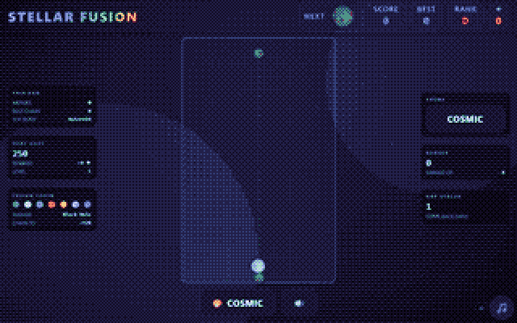
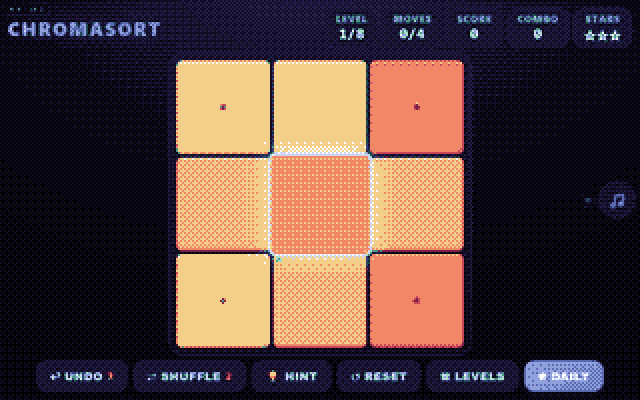
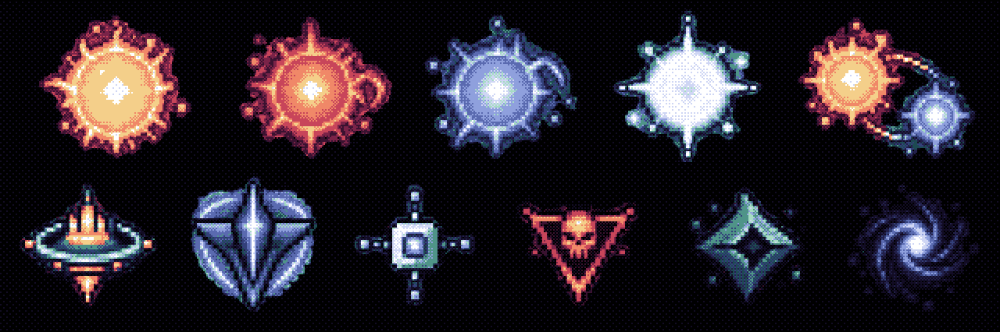

I make things.
Small Windows programs, an astronomy project and a few games. Some of it is public. Most of it is still early.
On a wide screen, drag a title bar to move a window. Everything in them is a plain link.
Works
Marketplace
| Game | Status |
|---|---|
| Starfire Hearth | in dev |
| Emberkind | experiment |
| Arcade × 13 | launch prep |


nothing on sale yetOPEN ↗
Vivy, Fluorite Eye's Song, in 8-bit
Vivy「Fluorite Eye's Song」8bit風▶ PLAYOne of my favs...a song from the heart, by Vivy.
8-bit arrangement by akiy2344.
a favouriteYOUTUBE ↗
Cygnus sky map
Programs
